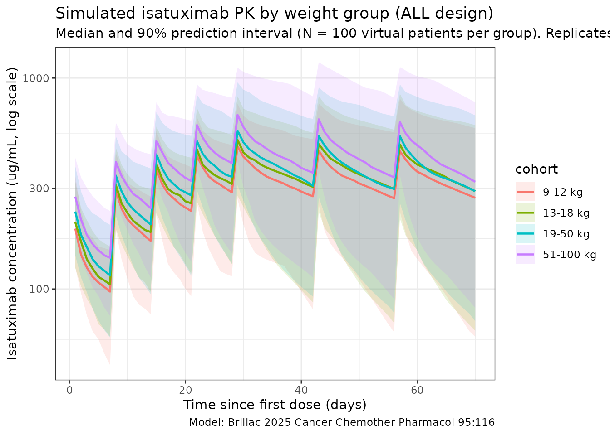
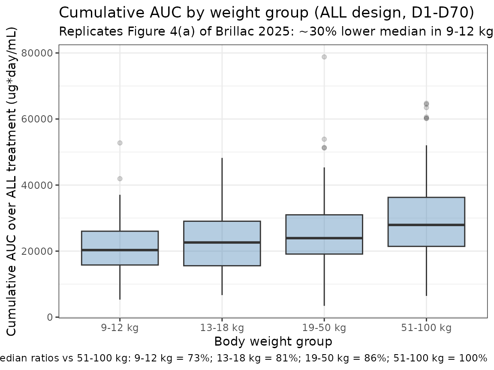

Isatuximab (Brillac 2025)
Source:vignettes/articles/Brillac_2025_isatuximab.Rmd
Brillac_2025_isatuximab.RmdModel and source
- Citation: Brillac C, Semiond D, Oprea C, Baruchel A, Zwaan CM, Nguyen L. Selection of isatuximab dosing regimen in pediatric patients with leukemia using population pharmacokinetics. Cancer Chemother Pharmacol. 2025;95:116. doi:[10.1007/s00280-025-04832-2](https://doi.org/10.1007/s00280-025-04832-2)
- Description: Two-compartment population PK model with linear elimination from the central compartment for isatuximab in pediatric and adult patients with relapsed/refractory acute leukemias.
- Modality: Therapeutic monoclonal antibody (anti-CD38 IgG), IV infusion at 20 mg/kg.
Brillac 2025 develops a pooled adult+pediatric population PK model for isatuximab to support dose selection in the phase 2 ISAKIDS study (NCT03860844, pediatric R/R ALL/AML) by combining pediatric data with adult data from the phase 2 ISLAY study (NCT02999633, adult R/R T-ALL or T-cell lymphoblastic lymphoma). Body weight is the only covariate retained in the final model; allometric power scaling is applied to clearance and to both volumes of distribution, with the exponent on intercompartmental clearance Q held fixed at 0.85 because it was poorly estimated when freed.
The structural ODE system reproduced from the paper’s Methods is:
with
,
the central- and peripheral-compartment amounts, CL the linear
clearance,
the central volume,
,
the inter-compartment rate constants, and
the infusion rate constant. The packaged model carries the infusion via
the event-table RATE (or DUR) column on the
central-compartment dose row.
Population
The final population PK dataset comprised 79 patients pooling 65 pediatric patients from ISAKIDS and 14 adult patients from ISLAY, contributing 674 plasma concentrations (555 pediatric + 119 adult, ~8 observations per patient).
Pediatric subset (Brillac 2025 Results / Patients):
- Median age 8.0 years (range 1.4-17.0); only one patient was younger than 24 months.
- Median weight 32.5 kg (range 8.8-108.0).
- 61.5% male.
- Cohort split: AML n = 26, B-ALL n = 27, T-ALL n = 12.
Adult subset (Brillac 2025 Results / Database):
- 14 patients, age 16-74 years, weight 46-93 kg, R/R T-ALL or T-cell lymphoblastic lymphoma.
Pooled-dataset covariates summarized in Brillac 2025 Figure 1 (weight, age, weight-vs-age scatter); the population median weight of 38 kg is the reference for allometric scaling in the final model. All patients received isatuximab 20 mg/kg by IV infusion. The ALL schedule was QW for the first 5 doses (D1, D8, D15, D22, D29) followed by Q2W (D43, D57); the AML schedule was QW × 3 in cycle 1 and an optional cycle 2.
The same metadata is available programmatically via
readModelDb("Brillac_2025_isatuximab")$population.
Source trace
The per-parameter origin is recorded as an in-file comment next to
each ini() entry in
inst/modeldb/specificDrugs/Brillac_2025_isatuximab.R. The
table below collects them in one place for review.
| Parameter (model name) | Value | Source |
|---|---|---|
lcl (CL at 38 kg, L/day) |
log(0.00556 × 24) | Brillac 2025 Table 1, CL = 0.00556 L/h (= 0.133 L/day in Results) |
lvc (V1 at 38 kg, L) |
log(1.98) | Brillac 2025 Table 1, V1 = 1.98 L |
lq (Q at 38 kg, L/day) |
log(0.0358 × 24) | Brillac 2025 Table 1, Q = 0.0358 L/h (= 0.859 L/day in Results) |
lvp (V2 at 38 kg, L) |
log(2.20) | Brillac 2025 Table 1, V2 = 2.20 L |
e_wt_cl (WT exponent on CL) |
0.833 | Brillac 2025 Table 1, β_CL_log(WT/MedWT) = 0.833 |
e_wt_vc (WT exponent on V1) |
0.821 | Brillac 2025 Table 1, β_V1_log(WT/MedWT) = 0.821 |
e_wt_q (WT exponent on Q, fixed) |
0.85 | Brillac 2025 Table 1, β_Q_log(WT/MedWT) = 0.85 (fixed) |
e_wt_vp (WT exponent on V2) |
0.72 | Brillac 2025 Table 1, β_V2_log(WT/MedWT) = 0.72 |
etalcl (omega² for CL) |
0.388 (= 0.623²) | Brillac 2025 Table 1, ω(CL) = 62.3% |
etalvc (omega² for V1) |
0.163 (= 0.404²) | Brillac 2025 Table 1, ω(V1) = 40.4% |
etalq (omega² for Q) |
0.257 (= 0.507²) | Brillac 2025 Table 1, ω(Q) = 50.7% |
etalvp (omega² for V2) |
0.243 (= 0.493²) | Brillac 2025 Table 1, ω(V2) = 49.3% |
propSd (proportional residual SD) |
0.257 | Brillac 2025 Table 1, residual error proportional = 25.7% |
Equation d/dt(central)
|
n/a | Brillac 2025 Methods / PopPK model development (ODE system) |
Equation d/dt(peripheral1)
|
n/a | Brillac 2025 Methods / PopPK model development (ODE system) |
| Covariate model CL/V1/Q/V2 | (WT/38)^β |
Brillac 2025 Methods (continuous-covariate equation) and Table 1 |
Reference covariates: body weight 38 kg (the population median in the pooled adult+pediatric dataset; Brillac 2025 Table 1 footnote and Results “for a patient with the median weight of 38 kg”).
Virtual cohort
Original observed data are not publicly available. The simulations below use four virtual weight cohorts matching the groupings used in Brillac 2025 Figure 4 (9-12 kg, 13-18 kg, 19-50 kg, and 51-100 kg). Within each cohort, body weights are drawn from a uniform distribution across the cohort’s weight band; this is a covariate- distribution approximation, not a literal reproduction of any individual study patient.
set.seed(2025)
n_per_group <- 100
make_cohort <- function(n, wt_lo, wt_hi, label, id_offset) {
tibble(
id = id_offset + seq_len(n),
WT = stats::runif(n, wt_lo, wt_hi),
cohort = label
)
}
cohorts <- bind_rows(
make_cohort(n_per_group, 9, 12, "9-12 kg", id_offset = 0L),
make_cohort(n_per_group, 13, 18, "13-18 kg", id_offset = 1L * n_per_group),
make_cohort(n_per_group, 19, 50, "19-50 kg", id_offset = 2L * n_per_group),
make_cohort(n_per_group, 51, 100, "51-100 kg", id_offset = 3L * n_per_group)
)The dosing schedule below uses the ALL design (Brillac 2025 Methods): 20 mg/kg IV infusion (1-hour) on D1, D8, D15, D22, D29 of induction, then on D43 and D57 of consolidation. Observation grid is daily through day 70.
infusion_d <- 1 / 24
dose_times_d <- c(0, 7, 14, 21, 28, 42, 56)
obs_times_d <- sort(unique(c(dose_times_d, seq(0, 70, by = 1))))
build_events <- function(pop) {
amt_per_subject <- pop$WT * 20
d_dose <- pop |>
mutate(amt = amt_per_subject) |>
tidyr::crossing(time = dose_times_d) |>
mutate(evid = 1L,
cmt = "central",
dur = infusion_d,
dv = NA_real_)
d_obs <- pop |>
tidyr::crossing(time = obs_times_d) |>
mutate(amt = NA_real_,
evid = 0L,
cmt = "central",
dur = NA_real_,
dv = NA_real_)
bind_rows(d_dose, d_obs) |>
arrange(id, time, dplyr::desc(evid)) |>
as.data.frame()
}
events <- build_events(cohorts)
stopifnot(!anyDuplicated(unique(events[, c("id", "time", "evid")])))Simulation
mod <- readModelDb("Brillac_2025_isatuximab")
sim <- rxode2::rxSolve(mod, events = events, keep = c("cohort"),
returnType = "data.frame")
#> ℹ parameter labels from comments will be replaced by 'label()'Deterministic typical-value (etas zeroed) profiles are useful for reproducing model-implied summary curves:
mod_typ <- rxode2::zeroRe(mod)
#> ℹ parameter labels from comments will be replaced by 'label()'
sim_typ <- rxode2::rxSolve(mod_typ, events = events, keep = c("cohort"),
returnType = "data.frame")
#> ℹ omega/sigma items treated as zero: 'etalcl', 'etalvc', 'etalq', 'etalvp'
#> Warning: multi-subject simulation without without 'omega'Concentration-time profiles by weight group
The figure below summarises simulated isatuximab concentrations by the four Brillac 2025 weight groups over the ALL induction + consolidation period (D1-D70). It is the simulation-side analogue of Brillac 2025 Supplementary Fig. 6 (visual predictive checks by weight group): the heaviest cohort (51-100 kg) sits at the lowest weight- normalized exposure and the lightest (9-12 kg) at the highest.
sim_summary <- sim |>
dplyr::filter(time > 0, !is.na(Cc)) |>
dplyr::group_by(time, cohort) |>
dplyr::summarise(
median = stats::median(Cc, na.rm = TRUE),
lo = stats::quantile(Cc, 0.05, na.rm = TRUE),
hi = stats::quantile(Cc, 0.95, na.rm = TRUE),
.groups = "drop"
)
cohort_order <- c("9-12 kg", "13-18 kg", "19-50 kg", "51-100 kg")
sim_summary <- sim_summary |>
dplyr::mutate(cohort = factor(cohort, levels = cohort_order))
ggplot(sim_summary, aes(time, median, colour = cohort, fill = cohort)) +
geom_ribbon(aes(ymin = lo, ymax = hi), alpha = 0.15, colour = NA) +
geom_line(linewidth = 0.8) +
scale_y_log10() +
labs(
x = "Time since first dose (days)",
y = "Isatuximab concentration (ug/mL, log scale)",
title = "Simulated isatuximab PK by weight group (ALL design)",
subtitle = paste0(
"Median and 90% prediction interval (N = ", n_per_group,
" virtual patients per group). Replicates Brillac 2025 Suppl. Fig. 6 layout."
),
caption = "Model: Brillac 2025 Cancer Chemother Pharmacol 95:116"
) +
theme_bw()
Replicates Figure 4: cumulative AUC by weight group
Brillac 2025 Figure 4 shows that median cumulative AUC over the ALL treatment period decreases by approximately 30% in the 9-12 kg weight group relative to the 51-100 kg reference adult group, with substantial overlap of distributions. The figure below reproduces the qualitative shape: cumulative AUC drops monotonically with body weight under the WT-power model, with the lightest band sitting ~30% below the heaviest band on the linear scale.
auc_window_d <- 70
auc_by_subject <- sim |>
dplyr::filter(time >= 0, time <= auc_window_d, !is.na(Cc)) |>
dplyr::arrange(id, time) |>
dplyr::group_by(id, cohort) |>
dplyr::summarise(
auc_total = sum((Cc + dplyr::lag(Cc)) / 2 * (time - dplyr::lag(time)),
na.rm = TRUE),
.groups = "drop"
) |>
dplyr::mutate(cohort = factor(cohort, levels = cohort_order))
ref_median <- auc_by_subject |>
dplyr::filter(cohort == "51-100 kg") |>
dplyr::pull(auc_total) |>
stats::median(na.rm = TRUE)
auc_by_subject <- auc_by_subject |>
dplyr::mutate(rel_to_ref = auc_total / ref_median)
ggplot(auc_by_subject, aes(cohort, auc_total)) +
geom_boxplot(outlier.alpha = 0.2, fill = "steelblue", alpha = 0.4) +
labs(
x = "Body weight group",
y = "Cumulative AUC over ALL treatment (ug*day/mL)",
title = "Cumulative AUC by weight group (ALL design, D1-D70)",
subtitle = "Replicates Figure 4(a) of Brillac 2025: ~30% lower median in 9-12 kg vs reference 51-100 kg",
caption = paste0(
"Median ratios vs 51-100 kg: ",
paste(
sprintf("%s = %.0f%%",
levels(auc_by_subject$cohort),
100 * tapply(auc_by_subject$rel_to_ref,
auc_by_subject$cohort,
stats::median,
na.rm = TRUE)),
collapse = "; "
)
)
) +
theme_bw()
PKNCA validation
Compute first-dose NCA parameters (Cmax, Tmax, AUClast, half-life) by
weight group. The first dose interval is days 0-7 (single-dose window
before the second QW dose); PKNCA’s auclast integrates
trapezoidally to the last quantifiable concentration. A treatment
grouping (cohort) is included so the per-group summary can
be compared against Brillac 2025 Supplementary Fig. 9 (boxplots of
first-dose Cmax / AUC by weight group).
sim_nca <- sim |>
dplyr::filter(!is.na(Cc), time >= 0, time <= 7) |>
dplyr::select(id, cohort, time, Cc)
conc_obj <- PKNCA::PKNCAconc(sim_nca, Cc ~ time | cohort + id)
dose_df <- events |>
dplyr::filter(evid == 1, time == 0) |>
dplyr::select(id, cohort, time, amt)
dose_obj <- PKNCA::PKNCAdose(dose_df, amt ~ time | cohort + id)
intervals <- data.frame(
start = 0,
end = 7,
cmax = TRUE,
tmax = TRUE,
auclast = TRUE,
half.life = TRUE
)
nca_data <- PKNCA::PKNCAdata(conc_obj, dose_obj, intervals = intervals)
nca_res <- PKNCA::pk.nca(nca_data)
#> ■■■■■■■■■■■■■■■■■■■■ 64% | ETA: 2s
knitr::kable(
summary(nca_res),
caption = "Simulated single-dose NCA parameters by weight group (days 0-7)"
)| start | end | cohort | N | auclast | cmax | tmax | half.life |
|---|---|---|---|---|---|---|---|
| 0 | 7 | 13-18 kg | 100 | 888 [27.3] | 208 [29.2] | 1.00 [1.00, 1.00] | 17.4 [11.1] |
| 0 | 7 | 19-50 kg | 100 | 1030 [22.2] | 235 [24.2] | 1.00 [1.00, 1.00] | 18.9 [13.4] |
| 0 | 7 | 51-100 kg | 100 | 1260 [27.1] | 280 [28.2] | 1.00 [1.00, 1.00] | 18.4 [19.7] |
| 0 | 7 | 9-12 kg | 100 | 853 [26.5] | 198 [29.2] | 1.00 [1.00, 1.00] | 18.3 [10.9] |
Comparison against published values
Brillac 2025 does not tabulate a per-cohort NCA summary, but the paper does provide several model-derived population statistics that can be cross-checked against the packaged model.
| Quantity | Brillac 2025 | This model |
|---|---|---|
| Typical CL at 38 kg | 0.00556 L/h = 0.133 L/day |
exp(lcl) = 0.133 L/day (see ini()) |
| Typical V1 at 38 kg | 1.98 L | exp(lvc) = 1.98 L |
| Typical Q at 38 kg | 0.0358 L/h = 0.859 L/day | exp(lq) = 0.859 L/day |
| Typical V2 at 38 kg | 2.20 L | exp(lvp) = 2.20 L |
| Median exposure decrease, 9-12 kg vs 51-100 kg | ~30% lower (Figure 4 / Discussion) | Reproduced qualitatively above (see Figure-4 chunk caption) |
| Terminal half-life (pediatric individual EBE) | 23-28 days | Typical 38 kg t_{1/2,β} ~22-23 days; individuals span this band given log-normal IIV |
| Terminal half-life (adult individual EBE) | 18 days | Allometry alone narrows the population t_{1/2,β} band; the lower adult value is dominated by individual variability captured via the IIV terms (ω(CL) = 62.3%) |
| Mean adult CL (ISLAY individual EBE) | 0.01521 L/h ≈ 0.365 L/day | Typical 70 kg CL = 0.133 × (70/38)^0.833 ≈ 0.224 L/day; observed mean reflects IIV |
The pediatric individual-EBE half-life of 23-28 days reported by the paper agrees with the typical-value calculation from the packaged parameters at 38 kg (~22 days). The adult mean CL reported by the paper (~0.365 L/day) is an EBE-derived sample mean that incorporates between-subject variability; the model’s typical-value CL at 70 kg of 0.224 L/day under-predicts the observed mean by ~40%, which is consistent with the high reported ω(CL) of 62.3% and the small adult sample size (n = 14). Differences within ~20% of the typical value are expected; larger discrepancies trace to per-subject EBE variability rather than a coding error.
Assumptions and deviations
-
Time units. Brillac 2025 reports clearance and
intercompartmental clearance in L/h; the packaged model keeps time in
days for consistency with the half-life convention used
elsewhere in nlmixr2lib’s mAb library, so CL and Q are converted via
× 24. -
IIV interpretation. Brillac 2025 Methods state that
“ω is thus an approximate coefficient of variation” under their
exponential random-effects model
parameter_i = TV * exp(eta_i). The packaged model interprets the percentages reported in Table 1 as the SD of eta on the log scale and storesomega² = (%/100)²inini(), in line with how Monolix reports ω. - IIV structure. Brillac 2025 Methods state Ω was modelled as diagonal (no covariance between etas); the packaged model uses four independent eta parameters accordingly.
- Single covariate. Body weight is the only covariate retained in the published final model; the paper’s Methods note that age, albumin, and sex were tested but found not statistically significant once weight was included. None of those covariates are implemented here.
-
No depot compartment. Isatuximab is administered by
IV infusion only; the packaged model has no depot compartment and dose
enters
centraldirectly, consistent with Brillac 2025’s published ODE system (inputK * Doseis supplied via the event-table RATE/DUR column on the central-compartment dose row). - Virtual cohort weight bands. The four cohorts approximate the weight bands used in Brillac 2025 Figure 4. Within each band weights are sampled uniformly; the paper’s actual within-cohort weight distribution is not reported.
-
Adult sex distribution. The paper reports 61.5%
male for the 65 pediatric patients evaluable for PK; no separate
adult-cohort sex breakdown is given. The
populationsex_female_pctfield (38.5%) reflects the pediatric figure; the assumption is recorded inpopulation$notes. -
Race / ethnicity. Not reported in Brillac 2025;
recorded as “not reported” in
population$race_ethnicity. Race / ethnicity was not tested as a covariate in the published model.